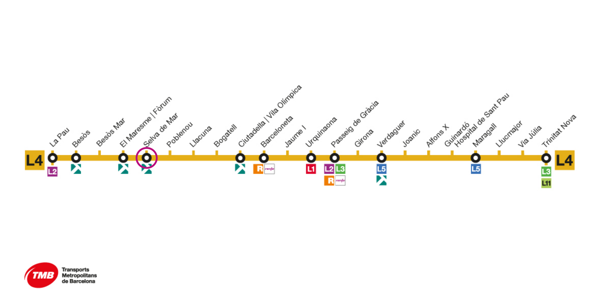

El evento se celebrará en Espai Pujades 350 en el corazón de Poblenou (Barcelona). Un entorno creativo y acogedor, a escasos metros de la playa y bien conectado, ideal para disfrutar de la comunidad y el conocimiento en un ambiente inspirador.
Puedes llegar fácilmente en metro (L4 – parada Selva de Mar), tranvía (T4 - parada Selva de Mar), bus, bicicleta… o incluso caminando si te hospedas en las cercanías. Poblenou es además un barrio con mucha vida, tanto de día como de noche, ideal para seguir conversando tras las charlas.

Si vienes de fuera de Barcelona, te recomendamos algunos hoteles y hostales en las cercanías del evento. Todos están bien comunicados con Espai Pujades, muchos a poca distancia a pie o en transporte público.